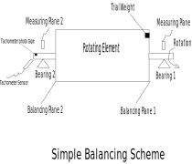
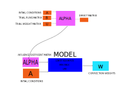

Walk-through Example¶
Data¶
The example is taken from B&K document (https://www.bksv.com/media/doc/17-227.pdf) Table 2 for example 6.
Trial Mass |
Sensor 1 |
Sensor 2 |
|---|---|---|
None |
170 mm/s @ 112 deg |
53 mm/s @ 78 deg |
1.15 g on Plane 1 |
235 mm/s @ 94 deg |
58 mm/s @ 68 deg |
1.15 g on Plane 2 |
185 mm/s @ 115 deg |
77 mm/s @ 104 deg |

Coding¶
Stating Problem Data:
Vibration can be expressed in
hsBalanceasstring‘amplitude @ phase’.hsbalance.tools.convert_matrix_to_cart()function is used to parse the vibration value from the mathematical like expression to Cartesian.Where amplitude is in any desired unit (micro - mils - mm/sec) and phase in degrees as measured by tachometer.
Note
It does not matter the units of measurments or the phase reference in the balancing problem as long as it is consistance along the whole problem.
Nomenclatures
The following nomenclature are taken from Goodman’s paper.
A: Initial Condition Matrix should be input as nested column vector (a list of a list) –> shape M x 1
B: Trial Runs Matrix should be input as nested column vector (list of lists) –> shape M x N
U: Trial masses vector should be input as nested column vector (a list) –> shape N X 1
Where
M : Number of measuring points (number of sensors x number of balancing speeds)
N : Number of balancing planes
Refer to the schematic drawing in figure-1.
hsBalance Modeling is done by creating Influence coefficient matrix Alpha by either direct matrix or A, B and U (not both). Then taking the Alpha matrix into a model with initial conditions will results the correction weights that should balance the rotor.

a. Initial vibration column matrix A which can be written from the first Row in Table-1 above.
A = [['170@112'], ['53@78']]
Trial Run Matrix B can be written from the second and third rows of the Table-1.
B = [['235@94', '185@115'], # --> Vibration at sensor 1 when trial masses were added at plane 1&2 (First column for both trial runs)
['58@68', '77@104']] # Vibration at sensor 2 when trial masses were added at plane 1&2 (Second column for both trial runs)
Trial Mass row Matrix U can be written from the first column of Table-1.
U = ['1.15@0', '1.15@0']
Convert from mathematical expression into complex numbers: using
hsbalance.tools.convert_matrix_to_cart()function
A = hs.convert_math_cart(A)
B = hs.convert_math_cart(B)
U = hs.convert_math_cart(U)
Note
hsbalance.tools.convert_matrix_to_cart() and hsbalance.tools.convert_math_cart are basically the same. The first is just a vectorized version from the later.
Create Influence Coefficient Matrix Alpha
hsbalance.IC_matrix.Alpha
alpha = hs.Alpha() # Instantiate Alpha class
alpha.add(A=A, B=B, U=U)
Now we have Alpha (
hsbalance.IC_matrix.Alpha) instance and initial condition A ; we can create a modelhsbalance.model.LeastSquares.
model_LeastSquares = hs.LeastSquares(A=A, alpha=alpha)
w = model_LeastSquares.solve() # Solve the model and get the correction weights vector
# Calculate Residual vibration vector
residual_vibration = hs.residual_vibration(alpha.value, w, A)
# Calculate Root mean square error for model
RMSE = hs.rmse(residual_vibration)
# Convert w back into mathematical expression
w = hs.convert_cart_math(w)
# print results
print(model_LeastSquares.info())
Output¶
++++++++++++++++++++++++++++++++++++++++++++++++++++++++++++
MODEL
++++++++++++++++++++++++++++++++++++++++++++++++++++++++++++
++++++++++++++++++++++++++++++++++++++++++++++++++++++++++++
MODEL TYPE
==================================================
LeastSquares
==================================================
End of MODEL TYPE
++++++++++++++++++++++++++++++++++++++++++++++++++++++++++++
++++++++++++++++++++++++++++++++++++++++++++++++++++++++++
INFLUENCE COEFFICIENT MATRIX
==================================================
++++++++++++++++++++++++++++++++++++++++
Influence Coefficient Matrix
++++++++++++++++++++++++++++++++++++++++
++++++++++++++++++++++++++++++++++++++++
Coefficient Values
==============================
Plane 1 Plane 2
Sensor 1 78.433 @ 58.4 15.34 @ 145.3
Sensor 2 9.462 @ 10.2 32.56 @ 142.4
==============================
End of Coefficient Values
++++++++++++++++++++++++++++++++++++++++
++++++++++++++++++++++++++++++++++++++++
Initial Vibration
==============================
Vibration
Sensor 1 170.0 @ 112.0
Sensor 2 53.0 @ 78.0
==============================
End of Initial Vibration
++++++++++++++++++++++++++++++++++++++++
++++++++++++++++++++++++++++++++++++++++
Trial Runs Vibration
==============================
Plane 1 Plane 2
Sensor 1 235.0 @ 94.0 185.0 @ 115.0
Sensor 2 58.0 @ 68.0 77.0 @ 104.0
==============================
End of Trial Runs Vibration
++++++++++++++++++++++++++++++++++++++++
++++++++++++++++++++++++++++++++++++++++
Trial Masses
==============================
Mass
Plane 1 1.15 @ 0.0
Plane 2 1.15 @ 0.0
==============================
End of Trial Masses
++++++++++++++++++++++++++++++++++++++++
==================================================
End of INFLUENCE COEFFICIENT MATRIX
++++++++++++++++++++++++++++++++++++++++++++++++++++++++++++
++++++++++++++++++++++++++++++++++++++++++++++++++++++++++++
INITIAL VIBRATION
==================================================
Vibration
Sensor 1 170.0 @ 112.0
Sensor 2 53.0 @ 78.0
==================================================
End of INITIAL VIBRATION
++++++++++++++++++++++++++++++++++++++++++++++++++++++++++++
++++++++++++++++++++++++++++++++++++++++++++++++++++++++++++
SOLUTION
==================================================
Correction Masses
Plane 1 1.979 @ 236.2
Plane 2 1.071 @ 121.8
==================================================
End of SOLUTION
++++++++++++++++++++++++++++++++++++++++++++++++++++++++++++
++++++++++++++++++++++++++++++++++++++++++++++++++++++++++++
RMSE
==================================================
0.0
==================================================
End of RMSE
++++++++++++++++++++++++++++++++++++++++++++++++++++++++++++
++++++++++++++++++++++++++++++++++++++++++++++++++++++++++++
Discussion¶
As expected for when M = N, we can have an exact solution of the model and residual vibration and RMSE comes to zero. The Real problem arises when M > N which is quite normal in large machines where two proximity installed in each bearing and number of bearings is high. Moreover, the number of balancing speeds can be up to 3 or 4 speeds (large machinery usually exceeds their first critical speeds). Recall that M = Number of sensors x number of speeds*.
In this case there is no exact solution and we are seeking for optimized solution that minimized the error.
hsBalacepackage provides (till now) Three types of optimization models:
Least Squares model: Minimize the square errors, this is the traditional method where we can get the best least accumulated error. The main disadvantage of this model is that it is very sensitive to outliers. This means that any faulty sensor in the system will lead to enormous error. Secondly, the model tried too hard to minimized the sum of errors. This can lead to very low residual vibration at one sensor and high vibration at another (can reach the alarm limit even!)
MinMax: This model tries to minimize the maximum residual_vibration. This is beneficial to level of the residual vibrations to be almost equal preventing too-low too-high phenomena in the previous model.
LMI: Linear Matrix Inequality model which allows lazy constraints. Lazy constraints mean that the model tries to relax the solution at certain sensors in order to get the best results at critical planes. This can be practically useful where not all planes should be treated equally. Sometimes, journal bearings with small clearance should be treated as critical planes (usually with low alarm and trip vibration limit), other planes can be considered non critical like casing sensors using accelerometers which we need to only to get the vibration below the alarm limit.
For more details take a tour over the notebooks in examples